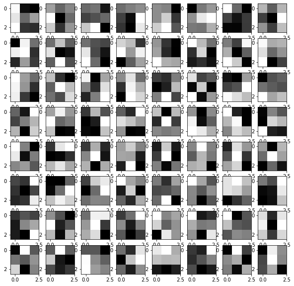
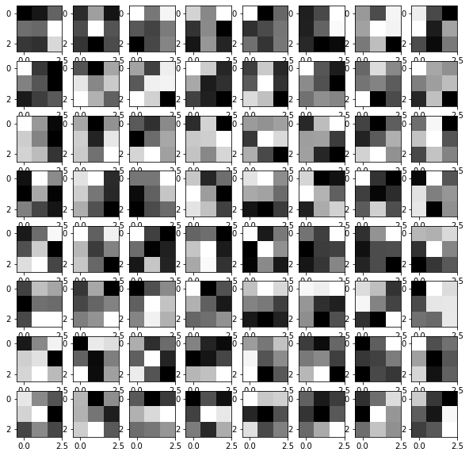
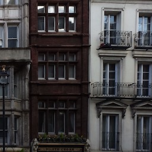
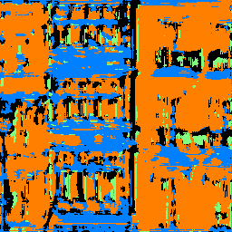
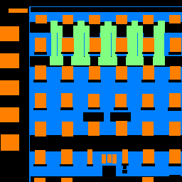
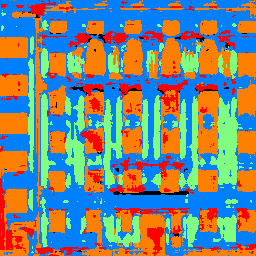
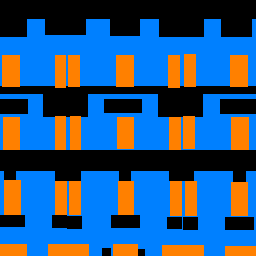
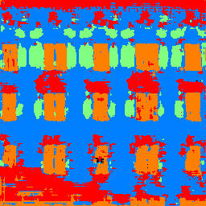
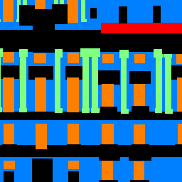
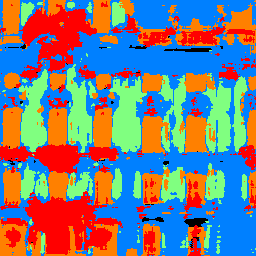

I trained a convolutional neural network to classify the torchvision.datasets.FashionMNIST dataset.
At first, I used two conv layers with 32 channels, but I found increasing the conv layers to 64 channels improved accuracy. I also found that the ReLU non-linearity produced sufficient results.
I used cross entropy loss (torch.nn.CrossEntropyLoss) as the loss function, and I used SGD (torch.optim.SGD) with a learning rate of 0.001 and momentum 0.9 as the optimizer for 30 epochs. I followed this PyTorch tutorial.
| Class | Validation Accuracy | Test Accuracy |
| T-shirt/top | 0.88414634 | 0.88582677 |
| trouser | 0.97540984 | 0.98632812 |
| pullover | 0.84939759 | 0.86653386 |
| dress | 0.94214876 | 0.90891473 |
| coat | 0.87070707 | 0.86732673 |
| sandal | 0.96856582 | 0.97759674 |
| shirt | 0.75841584 | 0.74141414 |
| sneaker | 0.97826087 | 0.97368421 |
| bag | 0.9765625 | 0.9795082 |
| ankle boot | 0.97260274 | 0.96523517 |
The model had the trouble with the shirt class. This make sense, as the other lowest classes (below 0.90) which are the tops, pullovers, coats have similar structure / are visually very similar.

I visualized the learn filters. Since the second convolutional layer has 64 channels, I limited it to the first channel.
| conv1 | conv2 |
|  |  |
Given more time, I would like to play more with paramters a bit and research better ways to speed up training, which took a very long time. I would also like to see what happens if I add more layers.
I trained another convlutionalnerual network to classify the FacadeDataset dataset. I split the training set into 800 images for training and 105 for validation.
This network consists of 6 convolutional layers of size 3*3 kernels, each followed by a batch norm layer with momentum 0.01 and ReLU layer. The structure of the network takes inspiration from U-net and HRNet-Semantic-Segmentation.
I used cross entropy loss (torch.nn.CrossEntropyLoss) as the loss function, and I used Adam (torch.optim.Adam) as the optimizer with a learning rate of 1e-3 and weight decay of 1e-5. I then trained the net for 30 epochs.
| Layer no. | In planes | Out planes | Kernel size |
| 1 | 3 | 32 | 3 |
| 2 | 32 | 64 | 3 |
| 3 | 64 | 128 | 3 |
| 4 | 128 | 64 | 3 |
| 5 | 64 | 32 | 3 |
| 6 | 32 | 5 | 3 |
After training the model, I ran the model on the test set.
| Class | AP | Color |
| others | 0.6209907273481369 | black |
| facade | 0.7094149405150957 | blue |
| pillar | 0.12481656878202824 | green |
| window | 0.7793396781016136 | orange |
| balcony | 0.3962888810281849 | red |
| average | 0.52617015916 |
I ran the net on this image from I took in London, Spring 2014.
|  |  | Looks a bit like a Jackson Pollock painting. It did best on the middle building, where it generally got the walls and the windows, but it didn't do as well for the other buildings, where it failed to recognize any balcony for the right building and turned most of the building into window. I think this also might have to do with the way the results are visualized, where we simply ask if the output value is >0.5 to determine existence. The middle building is the straightest and the other two are slightly angled, and all the training data is perfectly straight. |
| Image | Ground Truth | Prediction |
|  |  | |
|  |  | |
|  |  |
I noticed that other people's models produced better looking pictures at similar average AP's. Given enough time, I would like to fine tune my model or visualizer to produce better outcome.